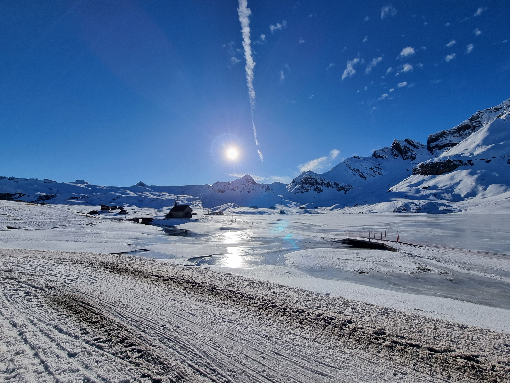

Melchsee-Frutt Winter Hike

Melchsee-Frutt Winter Hike
Summary
- Trail: 9km long, 420m altitude change, medium
- Starting point: Stöckalp Parking
- Route details: Schweizmobil 791
- Additional details: Cable car schedules, Tariff, Webcams
- Alternative more challenging route: Schweizmobil 790
- Alternative easier route: Schweizmobil 792
This snowshoe hike is ideal when there is little snow in lower altitudes. There are also the options of an easier route (
Schweizmobil 792), or a more challenging (
Schweizmobil 790) besides, the one I followed (
Schweizmobil 791).
Starting from the mountain station at Melchsee-Frutt, the path heads eastward, tracing the ski piste up to the Bonistock mountain restaurant. The ascent closely follows the ridge, offering an impressive panorama to both the north and south. Depending on the weather, the views stretch from Mount Titlis to the Wendenstock peaks, Bustenhorn overlooking the Trift glacier, Glogghuis, and all the way to Mount Pilatus. The visual journey concludes with the distinctive peaks of Nünalphorn and Huetstock.
Upon reaching the Boni mountain station, a traverse over the steep slope takes you eastward to Chringenpass. The descent from Chringen may pose a slight challenge due to snow drifts but is generally quite manageable.
Returning south of the Boni cliffs initially leads to Tannensee, nestled in an almost flat upland valley, situated on the saddle to Gental valley. The route brings you back to the finish in Frutt village, passing by Melchsee – the picturesque lake that lends its name to this quaint Obwalden winter sports resort.
Contact: outdoor.freedom.ch@gmail.com
{kind=link}
{kind=link}
{kind=link}
{kind=link}